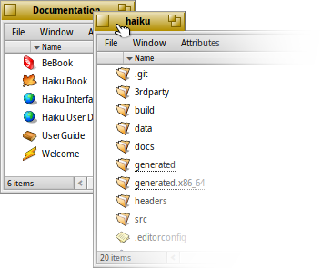
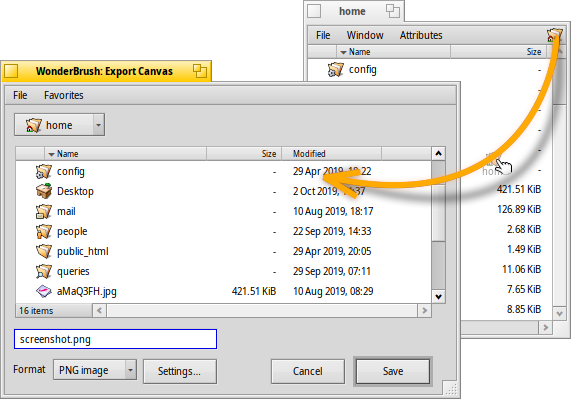
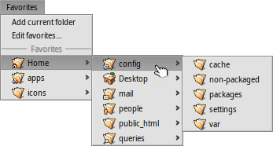

| Enhavtabelo |
|
Rapida movado kaj regrandigado Staplo & pavimo Fenestretoj por ekuzi kaj konservi Replikiloj |
Grafika uzantinterfaco de la Hajko
Grafika uzantinterfaco de la Hajko estas neseparebla parto de la sistemo. Diference de aliaj uniksosimilaj sistemoj, ĉi tie forestas aparta administrilo por fenestroj kaj oni ne povas ŝargi sistemon nur kun ŝelo de komanda lineo ĉar la Hajko celas uzantojn de surtablaj komputiloj, tiu reĝimo ne estas supozata kiel necesa.
Ĉar vi, verŝajne, jam havas sperton pri aliaj grafikaj interfacoj, ni preterpasu priskribojn por menuoj, kuntekstaj menuoj, operacioj treni & ĵeti k.t.p. Anstataŭ tio ni rigardu kelkajn unikajn proprecojn de interfaco de la Hajko.

Nur kelkaj detaloj de la interfaco bezonas apartan eksplikon.
La Laborstrio (Deskbar) de la Hajko similas al menuo "Lanĉi" kun panelo de rulantaj programoj. Pli detale legu en ĉapitro La Laborstrio.
- La flava titola langeto proponas pli ol nur nomo de programo aŭ dokumenta dosiernomo:
- Vi povas movi ĝin premtenante MAJUSKLIGKLAVON dum trenado al alia loko por stapli iom da fenestroj celante komforte atingi ilin per titolaj langetoj.
- Vi povas kaŝi fenestron per duobla alklako sur langeto (aŭ per STIRKLAVO ALTERNATIVKLAVO M). Kaŝitajn fenestrojn vi povas atingi per ĝiaj etikedoj en La Laborstrio aŭ per La Taskturnilo.
- Vi povas ŝovi fenestro malantaŭen per dekstra alklako sur langeto (aŭ bordero).
Fermanta butono
Zomanta butono (aŭ STIRKLAVO ALTERNATIVKLAVO Z). Por pleja parto da programoj ĝi etendas fenestron ĝis maksimuma grando ne kovrante la Laborstrion (premtenu MAJSKLIGKLAVON por kovri eĉ la Laborstrion). Tamen tio ne estas nepra konduto. Fenestroj de la Spurilo, porekzemple, regrandiĝas por la plej bone montri entenon.
Fenestra bordero. Maldektrbutona trenado movas fenestron, dektrbutona trenado ŝanĝas grandon.
Grandŝanĝilo
 Maniero rapide movi aŭ regrandigi fenestrojn
Maniero rapide movi aŭ regrandigi fenestrojn
Movado kaj regrandigado de fenestroj estas granda parto de interagado kun samtempe rulantaj programoj. Ekzistas pli komforta ago ol kapti malgrandajn flavajn langetojn aŭ malvastajn fenestrajn borderojn. Krom malgrandeco, ankaŭ la angula regrandigilo havas aldonan limigon - ĝi permesas regrandigon nur direktite al masupra dekstra angulo.
Treni borderon per deksta klako por regrandigi - ankaŭ funkscias, tamen vi devas deliĝente celi.
La Hajko proponas komfortan solvon por la problemo per klavkombinaĵo por mastrumi fenestrojn STIRKLAVO ALTERNATIVKLAVO plus musumo. Ankaŭ rigardu ĉapitron Ŝparklavoj kaj klavkombinaĵoj pri mastrumado por fenestroj.

Dum premtenado de STIRKLAVO ALTERNATIVKLAVO estas kolormenciataj la fenestraj borderoj la plej proksimaj al musmontrilo. Movu muson derekte al alia bordero por ŝanĝi celon. Trenu per premo de dekstra musbutono por regrandigi la fenestron je menciitaj borderoj.
Premtenu STIRKLAVON ALTERNATIVKLAVON kaj premu maldekstran musbutonon en ajna loko en la fenestro por relokigi ĝin. La sola rapida klako per dekstra musbutono dronigos fenestron - malantaŭigos ĝin.
Stapli & pavimi
Grafika uzantinterfaco de la Hajko havas unikan trajton pro fenestroj havas flavan langeton anstaŭ plenvastan titolan panelon. Tiu mastruma rimedo estas "staplo & pavimo".
En suba ekzemplo, fenestro de la Spurilo (Tracker) kun legosignoj estas kunpavimita dekstroflanke kun fenestro de la Retprospero (WebPositive), kiu mem estas staplita kun alia fenestro de la Spurilo, montranta entenon de la dosierujo haiku. La movbildo montras kiel uzanto alklakas la titollangetojn de staplitaj fenestroj por antaŭigi iun el ili.

Kunigita tielmaniere grupo de fenestroj povas esti movata kaj regrandigata samtempe - la komforta rimedo por labori en projektorientita medio. Anstataŭ aparte serĉi necesajn fenestrojn kun dokumentoj, de redaktado, de la Spurilo, de poŝto koncernanta nunan projekton, - simple "staplu&pavimu" ilin kune.
Aranĝado de fenestroj estas simpla: premtenu OPCIKLAVON kaj trenu per titollangeto la fenstron ĝis bordero aŭ titollangeto de alia fenestro, kiam celo kolormarkigos maltenu musbutonon.
Stapli & pavimi havas du eblecojn.
|  | "Staplado" estas metado de fenestro sur pinton de aliaj fenestoj kun aŭtomata relokigo de iliaj titollangetoj. |
 | "Pavimado" signifas kungluadon de fenestroj horizontale aŭ vertikale. |
Por disigi vi ankaŭ devas premteni OPCIKLAVON kaj treni per titollangeto la fenestron for de la grupo.
Fenestretoj por ekuzi kaj konservi
Kiam vi ekuzas aŭ konservas iun dosieron per iu programo, aperas la fenestretoj similaj al la:
Ĝi havas kutimajn erojn: liston de dosieroj de nuna dosierujo por elekto, se tio estas konserva dialogo, do tekstan kampon por tajpi dosiernomon, iam tirmenuon por diversaj formatoj k.t.p.
Ankaŭ vi povas elekti suprajn dosierujojn per tirmenuo lokiĝanta super la listo de dosieroj.
Se vi jam havas fenestron de la Spurilo kun iu intinero, vi povas tiri iun ajn dosieron, dosierujon aŭ doserujan ankron (la specialan piktogramon videblan en dekstra fenestro sur la bildo) el ĝi en la fenestreton kaj tio rezultos ŝanĝon de itenero al nova loko.
Ŝparklavoj
La ŝparklavoj en fenestretoj por ekuzi kaj konservi estas preskaŭ samaj kiel en la Spurilo. Krom komandoj jam atingeblaj per la menuo ne evidentaj estas:
| ALTERNATIVKLAVO N | Kreas dosierujon. | |
| ALTERNATIVKLAVO E | Renomigas elektitan elementon. | |
| ALTERNATIVKLAVO ↑ | Relokigas en supran dosierujon. | |
| ALTERNATIVKLAVO ↓ aŭ SENDI | Relokigas en elektitan dosierujon. | |
| ALTERNATIVKLAVO D | Relokigas en dosierujon de la labortablo. | |
| ALTERNATIVKLAVO H | Relokigas en hejman dosierujon. |
Pri uzo de ŝparklavoj en la Hajko entute legu la ĉapitron Ŝparklavoj kaj klavkombinaĵoj.
Preferaĵoj kaj ĵusaj dosierujoj
La menuo en fenestretoj por ekuzi kaj konservi proponas ĵus vizititajn dosierujojn kaj preferatajn lokojn, kiujn vi povas atribui mem. La sagetoj montras ke vi ankaŭ povas translokiĝi pli profunde tra hierarkio per submenuoj.
Por aldoni ion en Preferaĵojn vi devas simple viziti deziratan dosierujon kaj plenumi menuon . La loko aperos en ĉiuj fenestretoj de uzado/konservado.
Por forigi iun preferatan lokon plenumu menuon kaj forigu la elementon.
Ĉiuj Preferaĵoj estas stokitaj en /boot/home/config/settings/Tracker/Go/. Do vi povas ankaŭ krei aŭ forigi ligilojn al dosieroj kaj dosierujo senpere tie.
Replikiloj
Replikiloj estas malgrandaj memstaraj partoj de programoj, integrigeblaj en aliajn programojn. Se ŝalti opcion de la Laborstrio do vi povos rekoni replikeblajn partojn de programoj per speciala piktogramo, lokiĝanta kutime en malsupra dekstra angulo.

La plej taŭga loko kapabla uzi replikilojn estas la labortablo: simple trenu & ĵetu la piktogramon sur ĝin. La replikilo fariĝos parto de la labortablo kaj vi plu ne bezonos lanĉi patran programon por funkciigi la replikilon.
La dekstra alklako sur la replikilo vokos kuntekstan menuon de patra programo entenantan punkton por kompreni fonton de la replikilo kaj punkton .
La ekzemploj de replikiloj estas la grafikaĵo de la ObserviloDeAktiveco, la Aplikaĵeto de la Laborspacoj aŭ la Ĉetablkalkulilo.